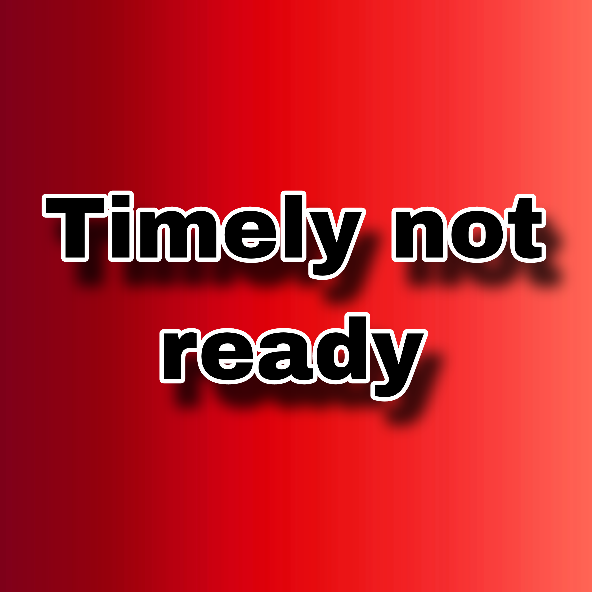

<!DOCTYPE html>
<html lang="en">
<head>
  <link rel="icon" href="../../img/themes/active/favicon.png">
  <title>Devlog | Ice and Fire Delight #1 | 0.2.4 | Donne431</title>
  <meta name="viewport" content="width=device-width, initial-scale=1, maximum-scale=1" />
  <meta name="title" content="Devlog | Ice and Fire Delight #1 | 0.2.4 | Donne431">
  <meta name="description" content="Welcome to my website! I am Donne431, just a guy, who love made a modifications for games. I'm 16 years old, and I'm from Crimea, Russia (demi-island washed by the Black and Azov Sea). I also like to create almost any content for Minecraft, that is: mods, maps, resource packs, servers.">
  <meta name="keywords" content="Minecraft, Forts, Mods, Resourcepacks, Datapacks, Donne431">
  <meta name="theme-color" content="#4bb4f1">


  <script src="https://code.jquery.com/jquery-3.3.1.min.js"></script>
  <script src="https://cdn.jsdelivr.net/npm/handlebars@latest/dist/handlebars.js"></script>
  <script src="https://mcapi.us/scripts/minecraft.min.js"></script>
  <script src="../../js/main.js"></script>
  <script src="../../config.js"></script>
  <script src="../../js/lightbox.min.js"></script>

  <script>tosAgreed = true</script>

  <link rel="stylesheet" href="https://cdnjs.cloudflare.com/ajax/libs/font-awesome/6.7.1/css/all.min.css"/>
  <link rel="stylesheet" href="../../css/style.css">
  <link rel="stylesheet" href="../../css/blog.css">
  <link rel="stylesheet" href="../../config.css">
  <link href="../../css/lightbox.css" rel="stylesheet" media="all">

</head>


<body>

  <div id="target"></div>

  <script id="template" type="text/x-handlebars-template">

  <header>
    <div class="hero" id="hero">
      <a><h1 style="padding-top: 3%;"></h1></a>
    <p> </p>
    <div class="news-card" align="center">
      <a href="../../" class="btn"><i class="fa-solid fa-house"></i> Home</a>
      <a href="../../devlog" class="btn"><i class="fa-solid fa-newspaper"></i> DevLog</a>
      <a href="#links" class="btn"><i class="fa-solid fa-share"></i> Links</a>
    </div>
    <p> </p>
    </div>
  </header>

  <section class="dark" id="blog">
    <h1><i class="fa-solid fa-newspaper"></i> DevLog</h1>
    <div id="news">
    <div class="news-card" align="center">
    <a>UPDATES</a><br>
    <a href="../../img/placeholders/red_timely_not_ready.png" data-lightbox="roadtrip"></a>
    <h1 align="center">Ice and Fire Delight #1 (v.0.2.4)</h1>
    <i>06.08.2025, 18:00</i><br>
    </div>
    <p>
    <!--
    Здравия желаю всем читателям первого devlog'а! <br>
    Как уже можно было понять я решил создать отдельную категорию публикаций на сайте - DevLog или на русском "Дневник разработчика". В них будет рассказываться о процессах разработки определённого проекта, как по мне это поможет людям лучше понимать, чем я занимаюсь. Данная категория скорее всего сменит привычные "СПОЙЛЕРЫ", так как будет приносить в разы больше информации и в принципе будет восприниматься по легче, чем случайный текст с картинкой.
    После предисловия, я наконец-то могу начать говорить о чём конкретно будет этот devlog. Данный devlog будет о том, что мод на данный момент не разрабатывается, от слова совсем... Я просто полностью потерял желание его делать, это произошло почти сразу после начала разработки 0.2.4, однако ещё ранее я уже начал значительный энтузиазм к созданию обновлений, но при этом их делал, так как это надо делать, чтобы не расстраивать людей, но сейчас... я просто не могу продолжать делать обновление. Такая фигня у меня уже случалась, и не раз, именно поэтому нет обновлений на National anthems, Classic Musical Discs или иные перспективные и не очень проекты. Однако думаю сейчас всё же отличается от других случаев, я до сих пор как бы хочу делать обновления для IaFD, но просто не могу, возможно это связано со стрессом в последние несколько месяцев, незнаю, но знаю лишь то, что обновление я делать просто не могу. До прекращения разработки 0.2.4, я успел лишь частично сделать обновление, процентов на 30 максимум и скорее всего, лишь эта часть увидит свет в ближайшее время. ПРОДОЛЖИТЬ ЗДЕСЬ.
    -->
    </p>
    <p align="center"><i class="fa-solid fa-user"></i> Donne431 (Author)</p>
    </div>
  </section>
  <section class="dark">
    <div class="news-card" align="center">
    <!-- <a href="../../devlog" class="btn2"><i class="fa-solid fa-arrow-left"></i> Previous post</a> -->
    <a href="../../devlog" class="btn2"><i class="fa-solid fa-newspaper"></i> Back to DevLog</a>
    <!-- <a href="../../devlog" class="btn2"><i class="fa-solid fa-arrow-right"></i> Next post</a -->
    </div>
  </section>

  <section class="light">
    <h1><i class="fa-solid fa-share"></i> Links</h1>
    <div id="links" align="center">
      <a href="https://discord.gg/NQBhQRDEhF"></a>
      <a href="https://www.curseforge.com/members/donne431/projects"></a>
      <a href="https://modrinth.com/user/Donne431"></a>
      <a href="https://github.com/Donne431"></a>
      <a href="https://www.donationalerts.com/r/donne431"></a>
    </div>
  </section>

  <footer>
    <a>&copy; {{server_port}} {{server_name}}. All Rights Reserved.</br>{{server_name}} is not affiliated with or endorsed by Mojang Studios or Microsoft<br>{{server_ip}}</a>
    <a></a>
    
  </footer>
  </script>
  <script src="../../js/license.js"></script>

</body>
</html>
